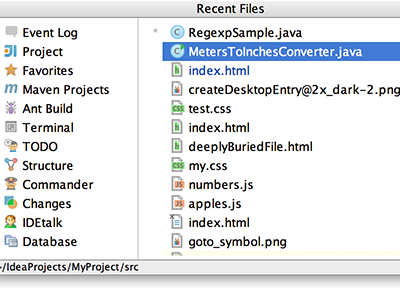
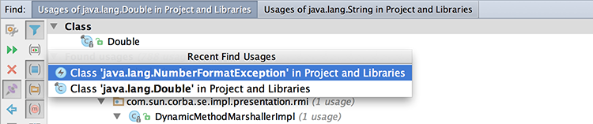

&shortcut:RecentFiles; (View | Recent Files) brings a popup list of the recently visited files. Choose the desired file and press Enter to open it.

Besides recent files, you can bring up results of the usage searches you have performed recently. To do that, use the same &shortcut:RecentFiles; shortcut with the Find tool window having the focus, and select the desired find usages result from the Recent Find Usages popup.
